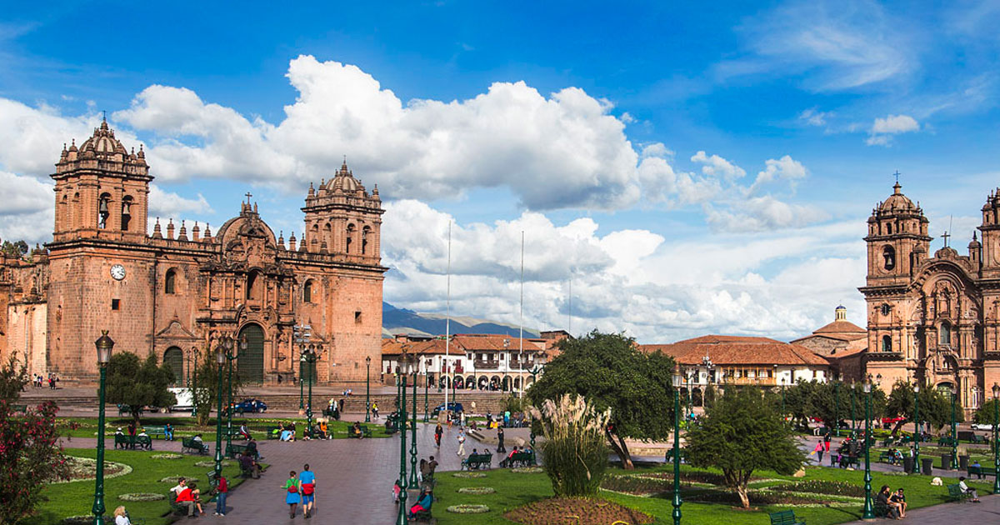

Arequipa ciudad blanca

Arequipa, conocida como "La Ciudad Blanca", es la segunda ciudad más grande del Perú y está ubicada en el
sur del país,
rodeada por imponentes paisajes montañosos y volcanes. La denominación "Ciudad Blanca" se debe a la
arquitectura de sus
edificaciones construidas principalmente con sillar, una piedra volcánica de color blanco. Arequipa es
famosa por su
centro histórico bien conservado, declarado Patrimonio de la Humanidad por la UNESCO, que alberga
iglesias coloniales,
monasterios y casonas antiguas. Además, la ciudad destaca por su gastronomía, que fusiona influencias
andinas y
españolas.
Cusco:

Cusco es una ciudad ubicada en el sureste de Perú y fue la capital del Imperio Inca. Conocida como la
"Capital Histórica
del Perú", Cusco es famosa por su rica historia, arquitectura colonial y vestigios incas. El centro
histórico de Cusco
también ha sido declarado Patrimonio de la Humanidad por la UNESCO. Entre sus principales atractivos se
encuentra el
Coricancha, el Templo del Sol, la Plaza de Armas y la cercana ciudadela de Machu Picchu, una de las
maravillas del mundo
antiguo.
Tarapoto:
Tarapoto es una ciudad ubicada en la región selvática de San Martín, en el norte de Perú. Conocida como
"La Ciudad de
las Palmeras", Tarapoto se caracteriza por su exuberante vegetación, clima cálido y biodiversidad. La
ciudad es un punto
de partida común para explorar la selva amazónica peruana y sus alrededores, que ofrecen oportunidades
para la
observación de aves, excursiones a cataratas y la experiencia de la rica cultura indígena.
Piura:
Piura es una ciudad ubicada en la costa norte de Perú y es conocida como "La Ciudad del Eterno Calor"
debido a su clima
cálido y seco. Es una de las ciudades más antiguas del continente americano y ha desempeñado un papel
importante en la
historia del país. Piura cuenta con atractivos como la Plaza de Armas, la Catedral de Piura y el
complejo arqueológico
de Narihuala. Además, la región es famosa por sus playas, siendo Máncora una de las más destacadas,
atractiva para los
amantes del sol y del surf.